Ce que l'app te permet de faire si tu as un rôle : fanfarons, morceaux, plans, setlists, réglages.
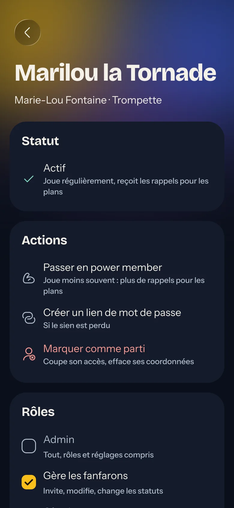
Les rôles
Un fanfaron peut cumuler plusieurs rôles. Un admin les donne depuis sa fiche.
Rôle
Détail
Admin
Tout, rôles et réglages compris. Il faut toujours au moins un admin.
Gère les fanfarons
Invite, modifie, change les statuts.
Gère les morceaux
Ajoute, modifie, archive.
Gère les plans
Crée, modifie, annule.
Gère les setlists
Écrit, modifie, lance le direct.
Brasseur
Pas un rôle : désigné plan par plan. Il modifie son plan et note les réponses.
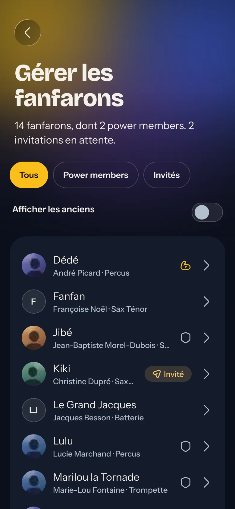
Fanfarons
Inviter, suivre les statuts, gérer les départs. Depuis Réglages › Gérer les fanfarons.
1
InviterRemplis ce que tu sais : surnom, prénom, instrument, e-mail. L'app envoie l'invitation par e-mail, et te donne le lien à copier au cas où. Il marche une fois, 7 jours.
2
Les statutsInvité · Actif · Power member (pas de rappels) · Parti · Invitation expirée.
3
Mot de passe perdu« Créer un lien de mot de passe » : un lien à usage unique pour qu'il en choisisse un nouveau.
4
Marquer comme partiCoupe l'accès tout de suite, efface téléphone, adresse, photo et rôles. Le nom et les réponses aux plans passés restent. On peut le faire revenir.
5
Sur ordinateur, un tableauUne ligne par fanfaron, avec statut et rôles. Filtres : tous, power members, invités, anciens.
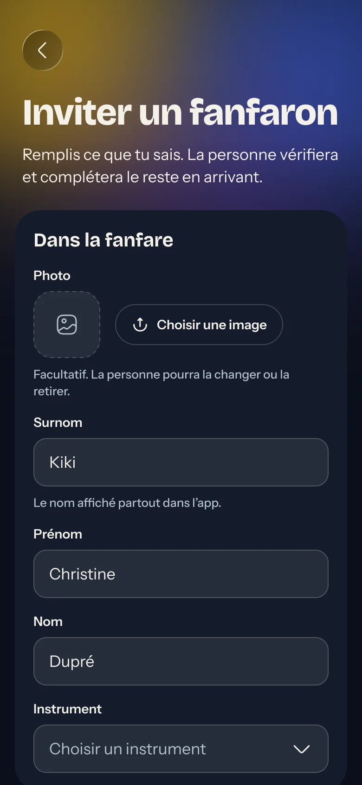
Inviter : la fiche à pré-remplir
Morceaux
Ajouter un morceau, c'est déposer ses fichiers en vrac : l'app les range.
1
Dépose tous les fichiers d'un coupMuseScore, MIDI, PDF des parties, enregistrement, jaquette. L'app reconnaît l'instrument de chaque PDF à son nom, et pose une question seulement quand elle hésite.
2
Le fichier MuseScore fait le resteIl donne le nom, le tempo, le MIDI et la partition du mode live. Sans lui, pas de MIDI ni de live.
3
La ficheNom interne, titre et interprète originaux, tempo de la fanfare, clip YouTube, salon Discord, droits d'auteur. Une note de version quand l'arrangement change.
4
Pour les setlistsDurée, ambiance (Chill · Normal · Teuf), positions possibles dans un set, pupitres pour qui c'est fatigant ou ça tricote. Le générateur s'en sert.
5
Changer le statut, remplacer un fichierLe statut change tout de suite pour tous. Un nouveau fichier remplace celui qui a le même rôle. Pour ne plus jouer un morceau, passe-le en Abandonné plutôt que de le supprimer.
6
Sur ordinateur, le tableau de gestionStatut, partitions présentes, moyennes de maîtrise et de kif, version.
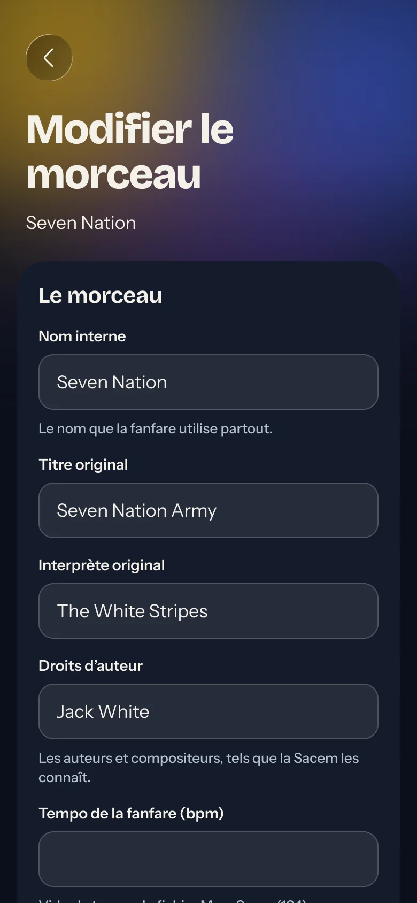
La fiche d'un morceau
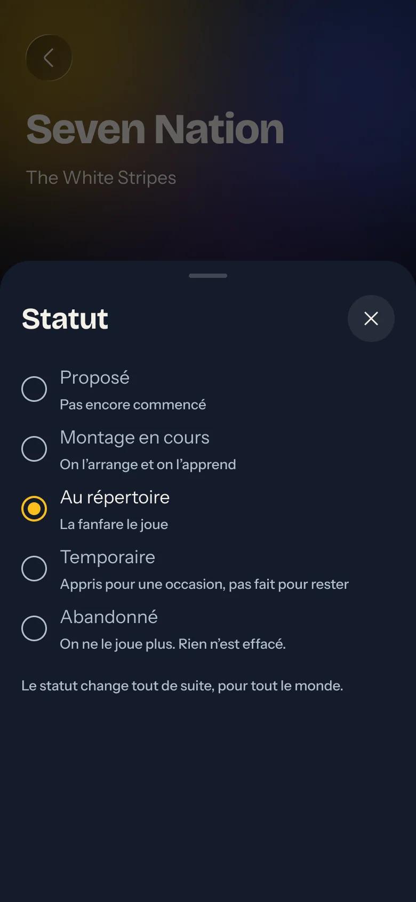
Changer le statut
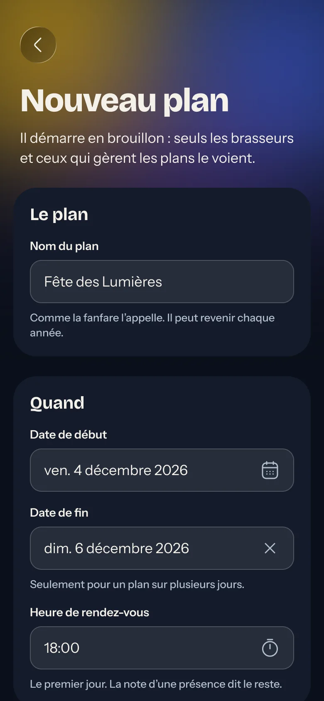
Plans
Un plan naît en brouillon, se propose à la fanfare, et se valide tout seul quand il est jouable.
Brouillon→Proposition→Accepté→Validé·Annulé
1
Créer le planNom, dates, heure de rendez-vous, lieu et adresse (coordonnées GPS pour les endroits introuvables), déguiz à apporter, brasseurs, infos diverses.
2
BrouillonVu des brasseurs et des gestionnaires de plans seulement. Personne ne répond encore. Supprimable tant que personne n'a répondu.
3
PrésencesUn plan d'une soirée a une présence sans nom. Sur plusieurs jours, découpe-le : chaque présence a son nom, sa note, son déguiz.
4
Jouable, validéUn pupitre est présent dès qu'un de ses fanfarons a dit oui ou si besoin. Le plan passe en Validé tout seul ; tu peux aussi valider sans un pupitre, ou revenir en Proposition.
5
Qui vient, relancerTouche un fanfaron pour noter la réponse qu'il t'a donnée de vive voix. « Relancer » prévient ceux qui n'ont pas répondu ; les rappels automatiques se taisent ce jour-là.
6
Annuler, cloreAnnulé garde les réponses au cas où. Un plan passé jamais validé est « à clore » : annule-le pour le ranger.
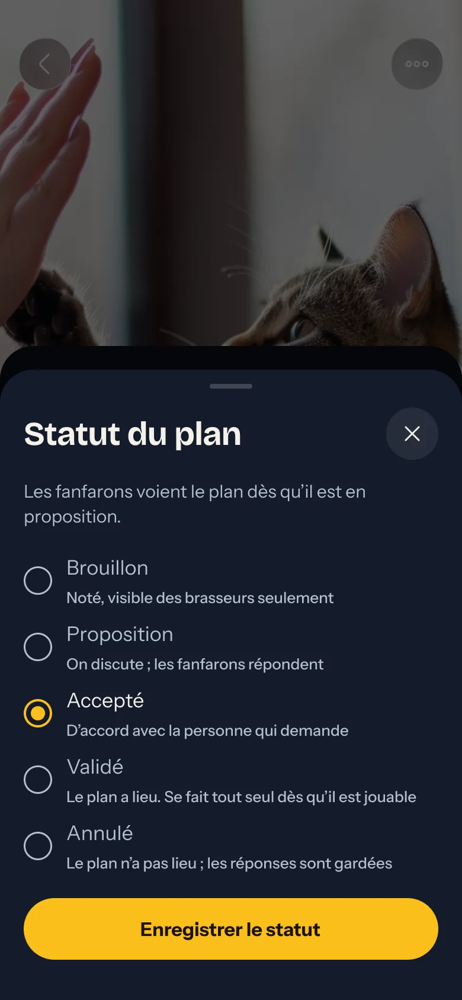
Le statut du plan
Noter la réponse d'un fanfaron
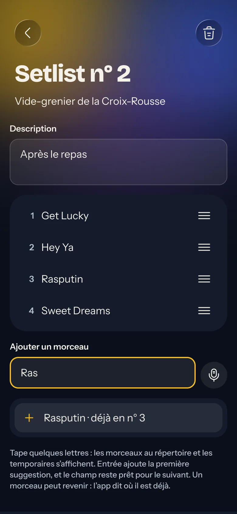
Setlists
Une setlist s'écrit une fois le plan validé. Quatre façons d'y mettre des morceaux.
TaperQuelques lettres, l'app propose.
DicterDis les morceaux dans l'ordre. L'app apprend tes façons de les dire.
Tous les morceauxLa liste complète, filtrable, avec le nombre de fois où chacun est déjà joué sur ce plan.
ProposerL'app compose une setlist pour une durée donnée, selon l'ambiance, les positions et les pupitres.
•
Réordonner, retirerLa poignée déplace un morceau, glisser vers la gauche le retire. La durée s'affiche en haut.
•
Lancer en directPendant le plan : « Suivant » à la fin de chaque morceau, « Terminer » au dernier. Ceux qui ont dit oui suivent sur leur écran et par notification.
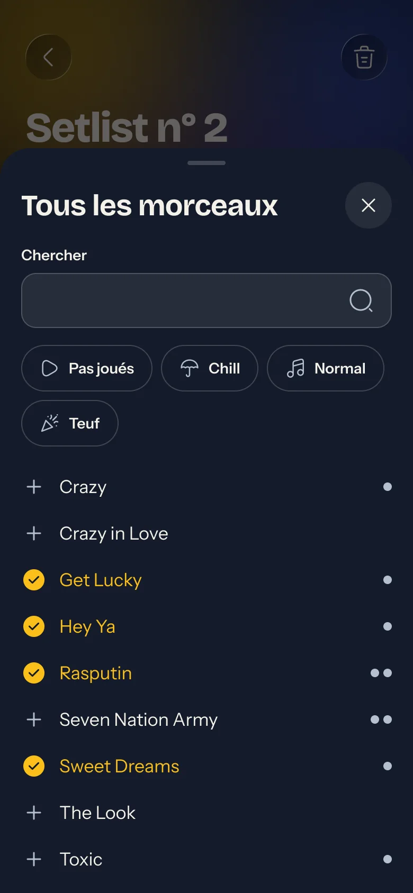
Tous les morceaux : la liste, filtrable, déjà joués marqués
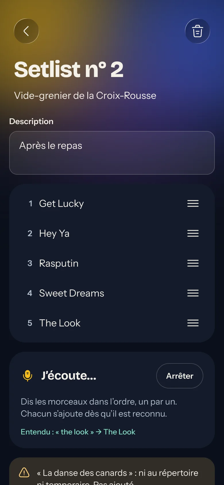
Dicter : chaque morceau s'ajoute dès qu'il est reconnu
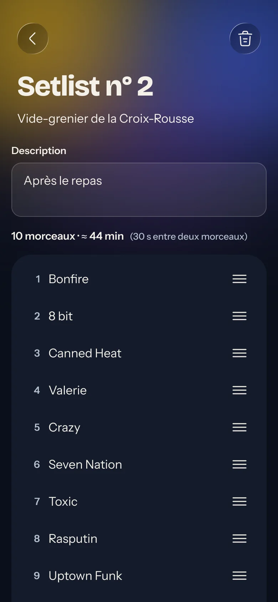
Proposer : une setlist pour la durée voulue
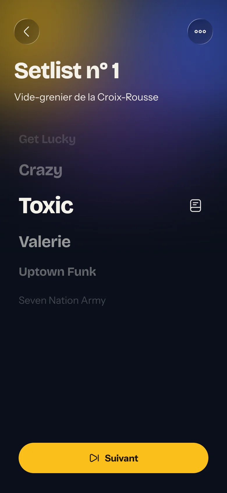
Le direct : « Suivant » à la fin de chaque morceau
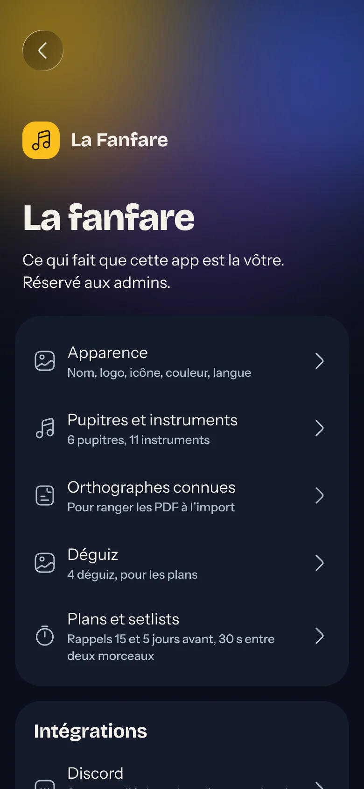
La fanfare
Réservé aux admins. Réglages › Réglages de la fanfare.
•
ApparenceNom, logo, icône de l'app, couleur de la fanfare, langue par défaut.
•
Pupitres et instrumentsRangés comme dans les arrangements, avec un pictogramme. Un pupitre qui a des fanfarons ne se supprime pas.
•
Orthographes connuesLes mots que l'import cherche dans le nom d'un PDF pour trouver son instrument.
•
DéguizLa liste, avec une image chacun. L'ordre est celui des choix d'un plan.
•
Plans et setlistsLes deux rappels (jours avant, heure d'envoi), le temps compté entre deux morceaux, la durée par défaut d'une setlist proposée.
•
DiscordLe serveur, le bot et le rôle Discord de chaque pupitre. Sans Discord, l'app n'en parle jamais.
•
ImporterUn zip de reprise avec un CSV par sujet (fanfarons, morceaux, plans, réponses), des modèles à télécharger, les photos et les fichiers des morceaux par dossier. L'app lit tout, dit ce qu'elle va ajouter, et ne charge qu'à ta confirmation.
•
Mise à jour de la baseAprès une nouvelle version de l'app, la base suit parfois : une page le dit, et l'applique avec ton mot de passe.